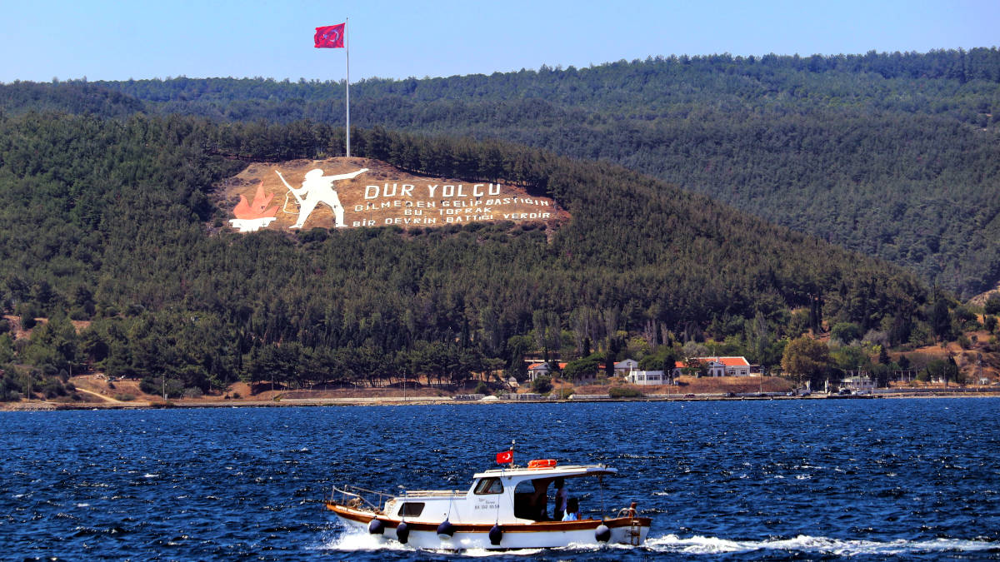
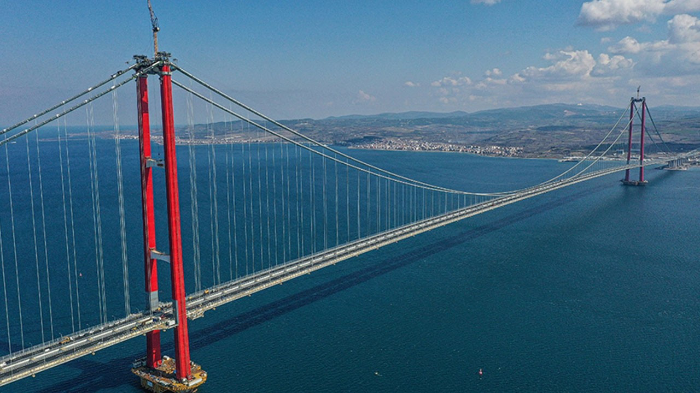
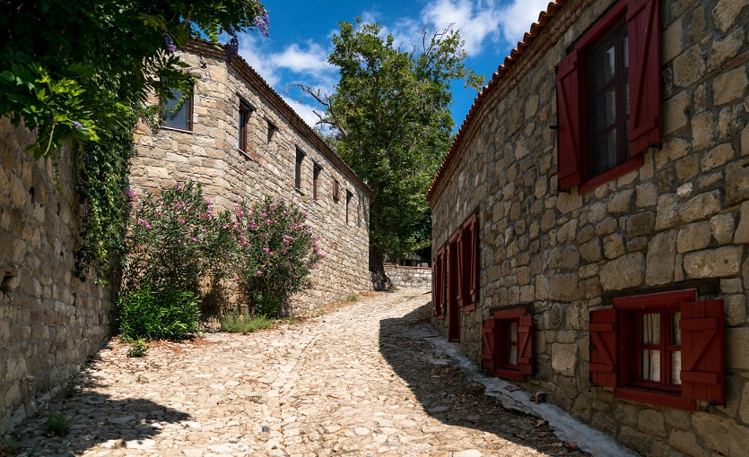

Çanakkale, Türkiye'nin kuzeybatısında, Marmara Bölgesi içinde yer alan il. 31 Aralık 2019 itibarıyla Çanakkale ili içerisindeki 12 ilçe ve bu ilçelere bağlı 81 mahallede yaşayan toplam nüfus 542.157 kişidir. Türkiye'de İstanbul ile birlikte, Asya ve Avrupa kıtalarında bulunan ve dolayısıyla boğazı olan iki ilden biridir. Yüzölçümü 9.817 km²'dir. Komşu illeri Edirne, Tekirdağ ve Balıkesir'dir. 1 Şubat 2019 TÜİK verilerine göre 12 İlçe, 23 belediye, bu belediyelerde 81 mahalle, ayrıca 576 köy bulunmaktadır. Çanakkale'de günümüzde bir üniversite vardır. Çanakkale'den diğer şehirlere ulaşım otoyollar ve hava yoluyla sağlanır. Çanakkale'deki iklim, ilin coğrafyası nedeniyle geçiş niteliği taşısa da yoğunlukla Akdeniz iklimi özelliklerine sahiptir. Anadolu'nun en batı noktası olan Baba Burnu ile Türkiye'nin en batı noktası Gökçeada'daki İncirburnu il sınırları içindedir. Ege Denizi'nde Türkiye'ye ait en büyük adalar olan Bozcaada ve Gökçeada ilçeleri de Çanakkale'ye bağlıdır.
Çanakkale, Cumhuriyetin ilk yıllarında Biga ve Gelibolu sancaklarının kaldırılması ve her ikisinin ortasında bulunan Çanak köyünün il ilan edilmesiyle meydana gelmiştir. 1927 Nüfus sayımında Çanakkale'nin merkez nüfusu sadece 8.500 kişi idi. Eski çağlarda, Hellespontos ve Dardanelles olarak da adlandırılan ilde 3000 yıldan beri yerleşim olduğu bilinmektedir. Bugün bile kalıntıları bulunan Truva (Troia, Troy, Troya) Antik kenti M.Ö 2500 yılında büyük bir depremle yıkılmış ve bölge uzun yıllar Lidyalılarca yönetilmiştir. Milattan önce 336 yılında bölgede en önemli güç haline gelen Pers İmparatorluğu Helenizm'i tüm dünyaya yaymak amacındaki Büyük İskender Granikos Çayı (Biga Çayı) kıyılarında büyük bir bozguna uğratılmıştır. Osmanlı Devleti döneminde de Karesioğulları Beyliğinin yıkılması ile ilin bugünkü topraklarının büyük bir bölümü ele geçirilmiş, Bizans'ın sayesinde ilin fethi daha da kolaylaşmış ve Boğazlar ile birlikte kontrol Osmanlı Devleti'ne geçmiştir. Çanakkale ilinin topraklarının bütününe bakıldığında, üzerinde kurulmuş olduğu yarımada Biga Yarımadası olarak adlandırılır. İl içindeki en kayda değer yükselti Biga Dağları'dır. Biga adının bu denli çok kullanımının sebebi, Cumhuriyet döneminden önce, Osmanlı idari sisteminde Sancağın Biga ilçesi olmasıdır. Yani ilin eski merkezi Biga olup, Cumhuriyet döneminde, kazanılmış olan başarılardan dolayı ilin ismi ve merkezi Çanakkale olarak değiştirilmiştir. İlin isminin kökeni yörede çok gelişmiş olan çanak - çömlek zanaatine dayanır. Şehrin iki simgesi haline gelen Kale-i Sultaniye ile çanakçılık özdeşleşince de şehir Çanakkale olarak adlandırıldı.
Çanakkale'deki iklim, ilin coğrafyası nedeniyle geçiş niteliği taşısa da yoğunlukla Akdeniz iklimi özelliklerine sahiptir.